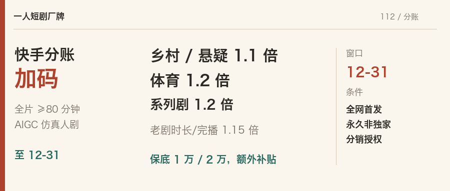

快手分账加码：乡村/悬疑1.1倍，体育1.2倍
11月17日，快手发布新一期分账短剧激励，分“品类激励”和“好剧/系列剧激励”两类。据体育产业生态圈、流媒体网转述，活动至12月31日，最高可叠加至1.5倍（媒体口径，官方活动页未打开）。
哪些题材有加成？
品类激励只限竖屏AIGC仿真人剧，全片不低于80分钟；上传时配“乡村”“热血”或“悬疑”等标签，并在活动期内上传、过审。
| 题材 | 分成系数 | 后验保底 |
|---|---|---|
| 乡村 | 1.1倍 | 1万元/部 |
| 悬疑志怪 | 1.1倍 | 1万元/部 |
| 体育 | 1.2倍 | 2万元/部 |
三类都配S级自然流扶持。总收益按“自然流分账×品类系数＋后验保底”计算；保底现金是额外补贴，不计入分成基数、不冲抵分成，随月度账单结算。
好剧、系列剧怎么加？
好剧激励覆盖AIGC仿真人剧和真人剧，全片不低于80分钟；老剧按单剧人均播放时长、完播率两项指标，各给1.15倍加权。
系列剧从第二季起，上一季发布后2个月内连更，给1.2倍加权；剧名要用“第2季”这类阿拉伯数字标清季数，且本季与上一季在同一分账账号上传。
要满足什么，什么时候截止？
所有参与剧目都要全网同步首发、永久非独家及分销授权；品类剧还要在活动期内完成上传并通过审核。窗口到12月31日。
“最高1.5倍”只出现在媒体导语，正文没给1.1/1.2/1.15/1.2如何加总的公式；做预算时先按单项系数和保底算，不要自己乘到1.5倍。
边界：官方活动页需登录并完成入驻才能查看，本轮未取得原文；系数、保底、系列剧和截止日来自体育产业生态圈11-18详稿、流媒体网11-19稿及艾瑞网11-18稿，属媒体口径。1.5倍叠加公式未核，不自行推算；具体以快手短剧经营者平台活动页和合同为准。
---
来源：体育产业生态圈《快手发布分账短剧新激励：分成加权最高1.5倍，支持品类与系列化创作》（2026-11-18），https://www.ecosports.cn/informationDetail?id=8250 ；流媒体网《快手分账短剧激励升级》（2026-11-19），https://lmtw.com/mzw/content/detail/id/260251/keyword_id/-1 ；艾瑞网同题（2026-11-18），https://news.iresearch.cn/yx/2026/11/573951.shtml 。